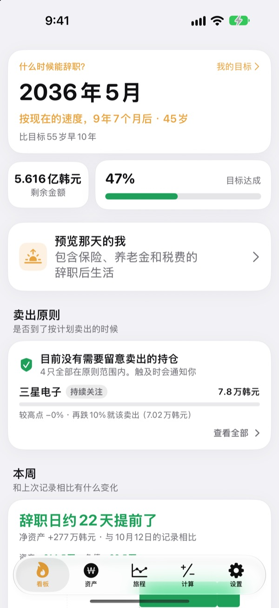
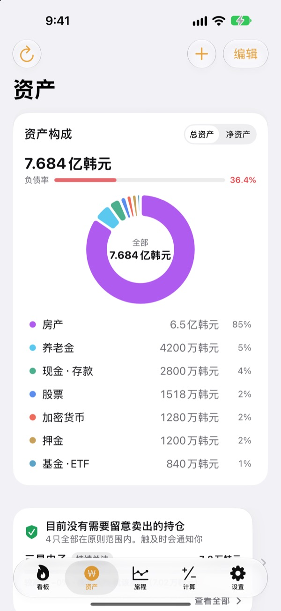
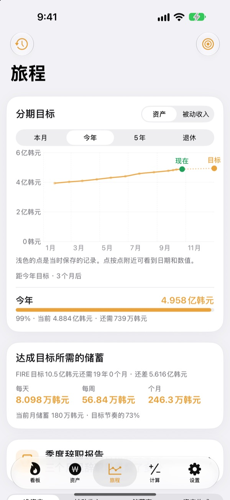
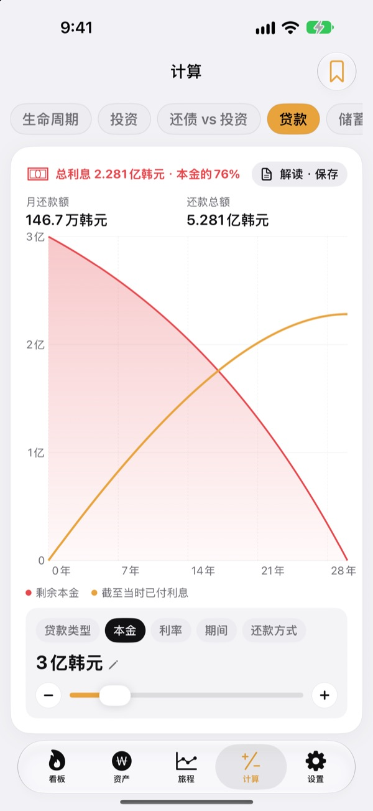

什么时候能辞职？
用数字说话
填好生活开销和已经攒下的钱，就能看到你可以辞职的月份。资产每变动一次，都能马上看出这一天是提前了还是推后了。
无需账号即可开始，记录保存在此设备上。

算算你的辞职日
拖动滑块试试，和App首屏用的是同一套算法。
还在一遍遍地算“我现在能辞职了吗”？
银行卡、证券账户、养老金、租房押金各在一处，连自己到底有多少钱都说不清，什么时候能辞职自然也只能靠感觉。Toesagak把分散的资产汇总到一个页面，并根据总额不断重新计算你可以辞职的月份。
分散的资产，一屏看全
房产、股票、基金和ETF、养老金、现金和存款、押金、加密货币乃至贷款，按类型汇总，显示总资产、净资产和负债率。
股票和加密货币可获取行情来更新市值；截取券商App的持仓页面，就能一次性导入持仓和市值。

离目标，每天还差多少
本月、今年、五年和退休的分期目标与过往记录，都在同一张图里。还会告诉你每天、每周、每月要存多少才能按时达成。
资产一有变动，当周记录就会自动保存，不用整理也能看到走势。

重大决定前，先算一算
内含生命周期资产走势、投资、还贷与投资对比、贷款、存款与定投、月薪购买力，以及把钱换算成时间的计算器。拖动数值，图表立刻重绘，修改前的曲线以虚线保留，方便对比。
常用的条件可以命名保存，随时调出。

三步就能开始
- 1
填写开销和年龄
大概的数字就够了，马上就能看到你的辞职日。
- 2
逐项添加资产
分得越细，日期越准。
- 3
偶尔打开看看
每周记录会自动累积，也可以在每月1日提醒你。
App的计算方式
- 目标金额
- 退休后一年开销 ÷ 安全提取率（4%即25年的开销）
- 辞职时间
- 目前净资产加上每月储蓄，按预期收益率增长后达到目标的月份
- 总资产
- 所有资产相加的总额
- 净资产
- 总资产减去贷款等负债
- 达成率
- 净资产 ÷ 目标金额。也可以按被动收入来看
- 可调整的项目
- 每月开销、安全提取率2%至6%、预期年收益率0%至12%、想要辞职的年龄
所有结果都是基于你输入数值的参考计算，不构成投资建议。
常见问题
我的记录保存在哪里？
只保存在这台设备上。无需注册，也不会发送给开发者。在设置中打开iCloud同步后，可通过你自己的iCloud账号在iPhone和iPad上看到相同的记录。
行情没有更新。
美股、韩股、加密货币和汇率无需任何设置即可获取。请检查网络连接，并确认股票代码填写正确。公寓价格使用韩国的公共房产数据，需要在设置中填写免费的服务密钥。
总资产和净资产有什么区别？
总资产是你拥有的全部资产之和，净资产是总资产减去贷款等负债后的金额。辞职时间按净资产计算。
换新设备时，记录怎么迁移？
在设置中用“导出”生成备份文件，存到“文件”App、iCloud Drive或邮件里，再在新设备上恢复即可。备份文件不包含API密钥。App还会自动在设备上保留最近20份备份。
卖出提醒是怎么工作的？
为每个持仓设定从高点回落多少，或者设定目标价，触及时就会提醒你。上涨时不会打扰你。行情会在打开App时，以及iOS允许后台运行时（通常每隔几个小时）检查，因此不是实时监控。
能不让别人看到我的数字吗？
在设置中打开App锁，就需要用Face ID或密码才能打开。开启后，每月提醒中也不会显示任何数字。
可以先随便看看吗？
在设置中打开演示数据，就能用虚构人物的资产浏览所有页面。关闭后，你自己的记录会原样回来。开启iCloud同步时无法使用演示数据。
怎样删除全部数据？
删除App后，设备上保存的所有记录都会一并删除。如果想留一份，请先在设置中导出备份文件。
可以照着这些数字去投资吗？
Toesagak的结果是根据你输入的数值和假设收益率得出的参考计算，不构成投资建议，实际结果会因市场和个人情况而不同。
问题反馈、功能建议或任何疑问，请发邮件至leeo@kakao.com。